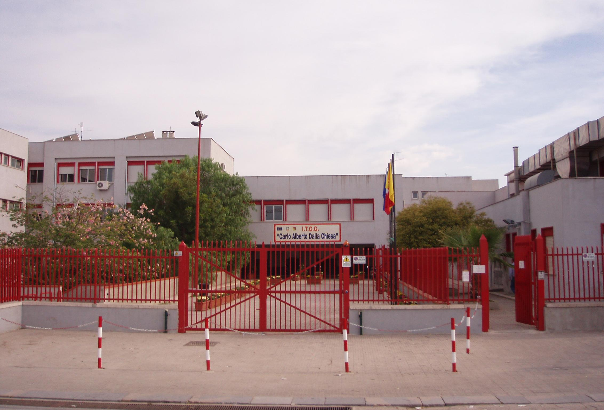

Informatica & Coding
Impara a pensare come un vero sviluppatore: scrivi algoritmi, crea siti web, app e videogiochi partendo da zero.
Python
C / C++
Java
Web & App
Dalla prima riga di codice fino alle reti globali e ai robot autonomi: ecco i quattro mondi che esplorerai nei nostri laboratori.
Impara a pensare come un vero sviluppatore: scrivi algoritmi, crea siti web, app e videogiochi partendo da zero.
Scopri come viaggiano i dati su Internet, configura router e switch, gestisci indirizzi IP e proteggi i sistemi dagli attacchi.
Capire come funzionano gli algoritmi che riconoscono immagini, testi e voci, imparando a usare l'IA in modo creativo e consapevole.
Collega il software al mondo fisico: programma robot con sensori, analizza segnali radio, fibra ottica e circuiti elettronici.
Una scuola moderna nel cuore di Partinico dove non si studia solo sui libri, ma si impara facendo.
Già in prima superiore entri in laboratorio con i docenti tecnici (ITP) per scrivere codice e sperimentare la fisica e la chimica applicata.
Crei videogiochi in Python, programmi robot mBot2 e simuli vere reti aziendali collaborando con i tuoi compagni.
A 19 anni hai già un diploma tecnico spendibile subito nel mondo del lavoro oppure una base solidissima per qualsiasi facoltà universitaria.
Ti accompagniamo passo dopo passo anche se parti completamente da zero: non serve saper già programmare prima di iscriversi!

Foto IstitutoI.T. "Carlo Alberto Dalla Chiesa" di Partinico.